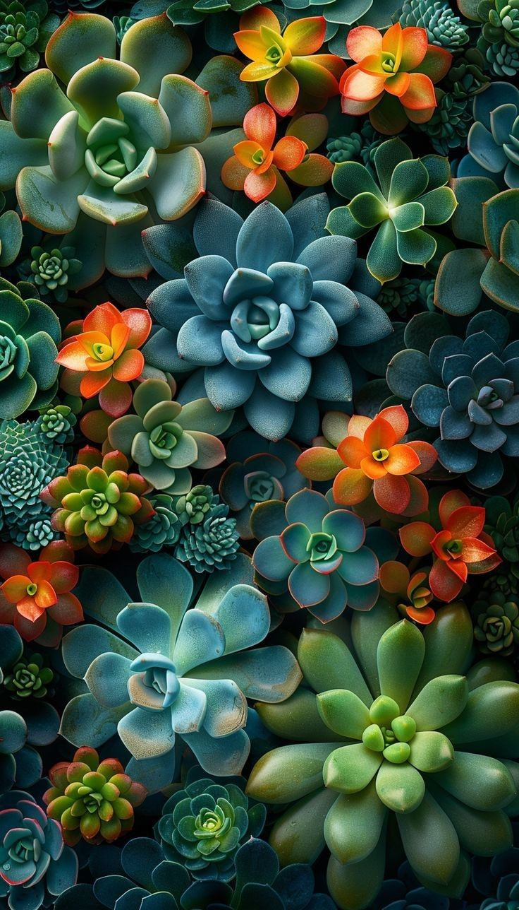
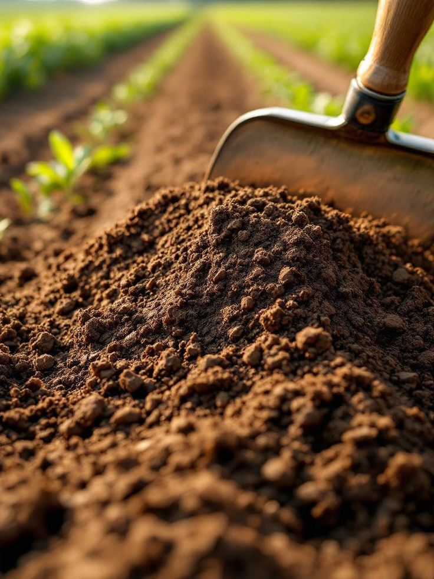
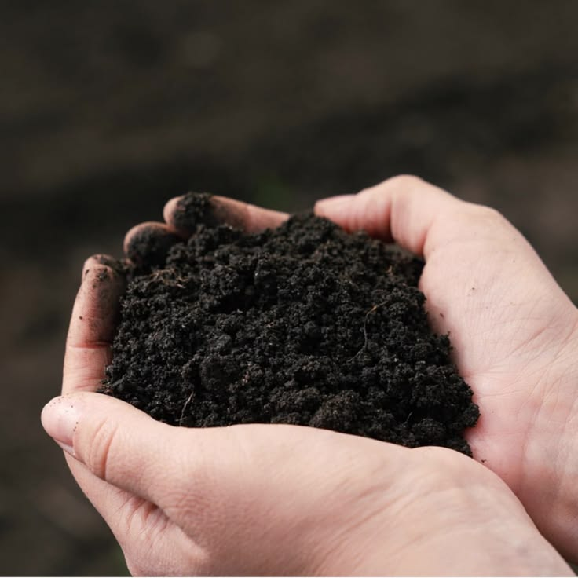
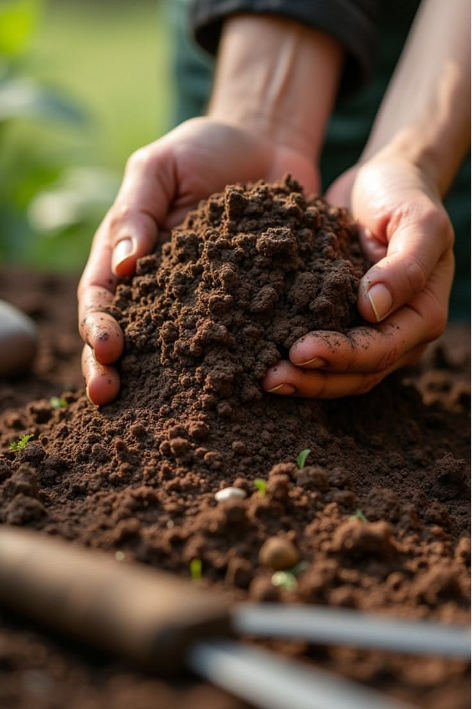

ARTE E FLORES PAISAGISMO
Cuidado com o Solo
Adubação adequada para fornecer os nutrientes que suas plantas precisam para crescer fortes e saudáveis.
🌱 SOLICITAR ORÇAMENTO
NOSSOS CUIDADOS
Nutrição para um jardim saudável.
A adubação ajuda a fornecer os nutrientes necessários para o desenvolvimento das plantas e para a manutenção de um jardim bonito.
Adubação de plantas
Aplicação de nutrientes para auxiliar no crescimento e desenvolvimento das plantas.
Nutrição do solo
Cuidados com o solo para melhorar as condições necessárias para o desenvolvimento das plantas.
Adubação conforme a necessidade
Escolha dos cuidados de acordo com as necessidades de cada planta e ambiente.
Fortalecimento das plantas
Manutenção da nutrição para contribuir para plantas mais bonitas e bem desenvolvidas.
Cuidados contínuos
Acompanhamento dos cuidados necessários para manter o jardim saudável.
Jardins mais bonitos
Uma boa nutrição contribui para manter as plantas bonitas e valorizar todo o jardim.
NOSSO TRABALHO NA PRÁTICA
Cuidado que faz crescer.
Veja alguns exemplos de trabalhos realizados com cuidado e atenção às plantas.



Plantas bem nutridas
transformam o jardim.
Conte com a Arte e Flores Paisagismo para cuidar das suas plantas.
FALE CONOSCO
Precisa de adubação?
Selecione os serviços que você precisa e solicite seu orçamento.